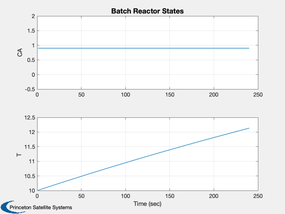

Batch Reactor Simulation
Simulates a batch reactor. Exothemic reaction carried out in a perfectly mixed batch reactor with a constant temperature cooling coil. Second-order irreversbile reaction.
Since version 1.
-------------------------------------------------------------------------
Reference: Henson, M. A. and D. E. Seborg. (1997.) Nonlinear
Process Control, Prentice-Hall. pp. 312-313.
-------------------------------------------------------------------------
See also: RHSBatchR, TimeGUI, Plot2D
-------------------------------------------------------------------------
Contents
%-------------------------------------------------------------------------- % Copyright (c) 2013 Princeton Satellite Systems, Inc. % All rights reserved. %--------------------------------------------------------------------------
Model parameters
-----------------
clear d; d.dH = -30; % Delta H/rho*C liter - deg-C/gmole d.uA = 1e-3; % UA/VrhoC 1/s d.tC = 20; % mol/L d.k0 = 1e8; % Frequency factor (liter/gmole-sec) d.eAR = 7.5e3; % Ea/R deg-C
State [cA;t]
-------------
x = [0.9;10]; t = 0;
The control sampling period and the simulation integration time step
---------------------------------------------------------------------
dT = 1;
Number of sim steps
--------------------
nSim = 240; tEnd = nSim*dT;
Plotting arrays
----------------
tPlot = zeros(1,nSim); xPlot = zeros(2,nSim);
Run the simulation
See RHSBatchR.m which models a batch reactor. ---------------------------------------------
for k = 1:nSim x = RK4( 'RHSBatchR', x, dT, t, d ); t = t + dT; tPlot(k) = t; xPlot(:,k) = x; end
Plot results
Gives open loop response. -------------------------
Plot2D( tPlot, xPlot,'Time (sec)',['CA';'T '],'Batch Reactor States') %-------------------------------------- % PSS internal file version information %-------------------------------------- % $Date$ % $Id: c24587ae07ec27a984f9b15a2787c2cd2afdad4a $